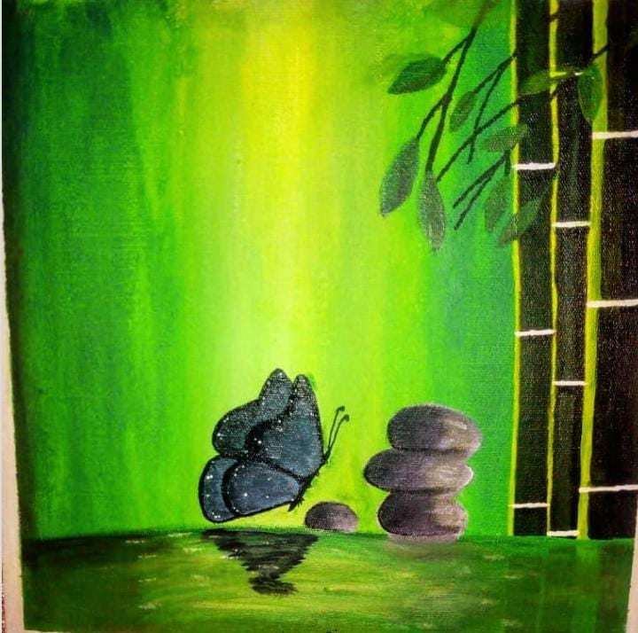

A Journey Through Various Art Forms
My interests span across various forms, from all types of painting, designs to textile material painting, calligraphy and many more.

Acrylic Painting
Acrylic painting is a versatile medium known for its vibrant colors and quick drying time, allowing artists to explore a wide range of techniques and textures.

Calligraphy
Calligraphy is the art of beautiful writing, where form and style transform text into a visual masterpiece.

Thread Art
Thread art involves creating intricate designs by stitching threads onto various surfaces, blending traditional embroidery with modern artistic techniques
Design
Designs are visual solutions that blend creativity with functionality, transforming ideas into tangible forms. The reflecting both artistic vision and practical purpose.